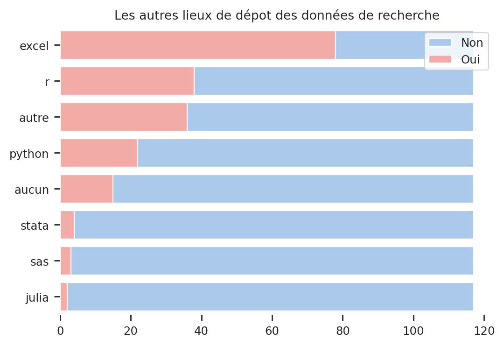
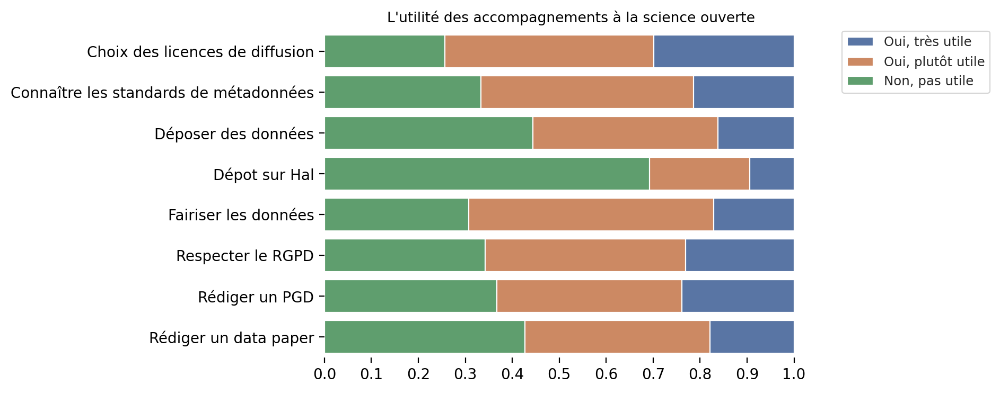

Notebook consacré à l’analyse des questions relatives à la Science Ouverte#
Show code cell source
def split_multiple_choices(data, column, index, sep = '|'):
"""
split and explode column with multiple value
data = a panda dataframe
column = name of column which we want to split.
index = column corresponding to id of rows
sep = by default '|'. Character use to separate values.
"""
df_split = data.copy()
df_split[column]= df_split.apply(lambda row: row[column].replace(";","|") ,1 )
df_split[column] = df_split[column].str.split(sep)
df_explode = df_split.explode(column)
gb_data = df_explode.groupby([column]).agg(nb = (index, "size")).sort_values("nb", ascending=False).reset_index()
gb_data["total"] = data[index].nunique()
gb_data["freq"] = gb_data.nb/gb_data.total*100
gb_data["total_freq"] = gb_data.total/gb_data.total*100
return df_explode, gb_data
def grouped_question(data, column, index = "q45_clé"):
"""
split and explode column with multiple value
data = a panda dataframe
column = name of column which we want to split.
index = column corresponding to id of rows
sep = by default '|'. Character use to separate values.
"""
df_tmp = data.copy()
gb_data = df_tmp.groupby([column]).agg(nb = (index, "size")).reset_index()
gb_data["total"] = data[index].nunique()
gb_data["freq"] = gb_data.nb/gb_data.total*100
gb_data["total_freq"] = gb_data.total/gb_data.total*100
return gb_data
Connaissance et pratique de la Science Ouverte#
Plusieurs questions de l’enquête portent sur les connaissances et les pratiques de la Science Ouverte. La première question demande ainsi aux participants s’ils “sont “familiers des principes de la Science Ouverte”. 57% ont répond “oui, un peu”, 32 “oui, tout à fait” et 10% “non”. Ils sont par ailleurs 40% à avoir déposé plusieurs fois des publications sur Hal, et 35% le font systématiquement.
Principes de la science ouverte |
nb |
freq |
|---|---|---|
Non |
12 |
10.3 |
Oui, tout à fait |
38 |
32.5 |
Oui, un peu |
67 |
57.3 |
117 |
100.0 |
q2_hal_depot |
nb |
total |
freq |
total_freq |
|---|---|---|---|---|
Non |
15 |
117 |
12.8 |
100 |
Oui, plusieurs fois |
47 |
117 |
40.2 |
100 |
Oui, systématiquement |
41 |
117 |
35.0 |
100 |
Oui, une fois |
14 |
117 |
12.0 |
100 |
q4_diff_data |
nb |
total |
freq |
|---|---|---|---|
Autre, précisez |
25 |
117 |
21.4 |
Non |
84 |
117 |
71.8 |
Oui, sur Data Paris 8 |
1 |
117 |
0.9 |
Oui, sur Nakala |
3 |
117 |
2.6 |
Oui, sur Zenodo, Nakala |
4 |
117 |
3.5 |
En ce qui concerne l’ouverture des données, 72% des personnes interrogées ne l’ont jamais fait. ParmiScience les 28% personnes restantes, 6% d’entre elles ont utilisé au moins une fois des entrepôts généralistes comme Data Paris 8 et Nakala ont été utilisés. parmi les autres moyens de diffusion utilisés, 10 personnes utilisent Open Science Framework (OSF), 6 mettent leurs données sur le site web personnel et 3 les entreposent sur un dépôt “git”. On observe également que 3 répondent déposent leurs données sur les entrepots spécialisés, liés à la linguistiques, Ortolang et Cocoon.

Enfin, un peu moins de 10% des personnes interrogées ont déjà déposé des productions sur Octaviana. Ces productions sont des captations d’événements pour trois d’entre elles et des travaux universitaires et des publications pour les huit autres. Par ailleurs seules 9 personnes sur les 91 n’ayant jamais déposé de production sur Octaviana ont précisé qu’elles ne connaissaient pas la bibliothèque numérique. En tout une personne sur cinq n’en a jamais entendu parlé.
df0.loc[df0.q4_diff_data !="Non", "q4_diff_data_grouped"] = "Oui"
df0.loc[df0.q4_diff_data =="Non", "q4_diff_data_grouped"] = "Non"
depot_donnee = grouped_question(df0, column="q4_diff_data_grouped", index = "q45_clé")
print("\n### Dépôt des données de recherche\n", depot_donnee)
df_exp, depot_donnee2 = split_multiple_choices(df0, column="q4_diff_data", index="q45_clé", sep = '|')
print("\n### Dépôt dans Octaviana détaillé \n", depot_donnee2.to_markdown(index=False))
### Dépôt des données de recherche
q4_diff_data_grouped nb total freq total_freq
0 Non 84 117 71.794872 100.0
1 Oui 33 117 28.205128 100.0
### Dépôt dans Octaviana détaillé
| q4_diff_data | nb | total | freq | total_freq |
|:------------------------|-----:|--------:|----------:|-------------:|
| Non | 84 | 117 | 71.7949 | 100 |
| Autre, précisez | 25 | 117 | 21.3675 | 100 |
| Oui, sur Zenodo, Nakala | 4 | 117 | 3.4188 | 100 |
| Oui, sur Nakala | 3 | 117 | 2.5641 | 100 |
| Oui, sur Data Paris 8 | 1 | 117 | 0.854701 | 100 |
Les autres modes de dépôt des données de recherche#
df0.loc[df0["q4_diff_data"]=='Autre, précisez', "q4_diff_data_rec"] = df0.q4_autres_entrepots_rec
df0.loc[df0["q4_diff_data"]!='Autre, précisez', "q4_diff_data_rec"] = df0.q4_diff_data
df0.loc[df0["q4_diff_data_rec"].isna(), "q4_diff_data_rec"] = "NSP"
q4 = split_multiple_choices(df0, column="q4_diff_data_rec", index="q45_clé", sep = '|')
Développement et dépôt de codes ou de logiciels#
Près d’un quart des répondants ont déjà été amenés à développer ou faire développer du code ou des logiciels dans le cadre de leurs recherches, dont deux n’ont jamais déposé leur code ou logiciel sur un entrepot dédié.
Si le dépôt de code sur Github et Gitlab restent les solutions les plus usitées, 6 personnes déposent leus codes et logiciels ailleurs :
“Sur les dépôts SSC des commandes Stata”;
“sur des repositories personnels”;
“sur Hal”;
“sur Ortolang et Huma-Num”,
“Sur des instances auto-hébergées de Gitlab”
ou “sur l’INPI”.
Les 31 personnes ayant répondu “Oui” à la question “êtes-vous amené.e à développer ou faire développer des logiciels/du code spécialisé(s) ?” ont donnée des précisions sur ce qu’ils développent ou font développer en répondant à la question 16. Nous avons analysé les réponses manuellement et deux profils se dégagent. On a tout d’abord un ensemble de chercheurs qui développent des “logiciels variés”, des “algorithmes” ou encore des “plateformes, programmes logiciels, œuvres” sans données d’autres précisions. L’autre groupe, le plus important, est constitué de chercheurs qui manipulent du code afin de collecter, traiter et analyser les données. Au sein de ce groupe, quelqu’uns se distinguent par le fait qu’ils traitent des données issues d’expériences.
Les besoins d’accompagnement à la Science Ouverte#
Mis à part l’accompagnement au dépot dans Hal, une majorité de répondants juge les accompagnement à la Science Ouverte comme étant utiles. Les licences de diffusion des résultats de recherche est le sujet pour lequel les répondants ont manifesté le plus d’intérêt : 87% considèrent qu’un accompagnement sur ce thème serait “plutôt utile” (52%) voire “très utile” (35%). Vient ensuite la “fairisation” des données de recherche avec 81% des participants à l’enquêtre déclarant qu’il serait utile d’être accompagner dan sle processus permettant de produire des données respectant les principes FAIR : Facile à trouver, Accessible, Interopérable, et Réutilisable. De façon général, les accompagnements apparaissent d’autant plus utiles qu’ils portent sur des aspects juridiques (licence, RGPD) ou des sujets liés à l’ouverture des données (métadonnées, dépots, principes FAIR).

Types de données#
#%%capture cap
for n, family in enumerate(df_col.question_family.unique()):
list_quest = [x for x in dict_question if dict_question[x]==family]
if len(list_quest) > 0:
question = df_col.question.loc[df_col.question_family == family].iloc[0]
print("==================\n", question)
for m, col in enumerate(list_quest):
print(df_col.name.loc[df_col.label==col].iloc[0])
gb_data = grouped_question(df0, column=col, index = "q45_clé")
print(gb_data)
print("---------------------\n")
with open("tableau_frequence_question_simple.txt", 'w') as file_in:
file_in.write(cap.stdout)
def tab_croise(data, x, y, regroup_y = True, khideux = False) :
"""
x = variable en ligne
y = variable en colonne
"""
if regroup_y == True:
data.loc[data[y].str.lower().str.contains("oui"), f"{y}_rec"] = "Oui"
data.loc[data[y].str.lower().str.contains("non"), f"{y}_rec"] = "Non"
cross_tab = pd.crosstab(data[x], data[f"{y}_rec"], margins = True, margins_name="Total", normalize=False)
cross_tab0 = pd.crosstab(data[x], data[f"{y}_rec"], margins = False)
else:
cross_tab = pd.crosstab(data[x], data[y], margins = True, margins_name="Total", normalize=False)
cross_tab0 = pd.crosstab(data[x], data[f"{y}_rec"], margins = False)
if khideux == True:
print(scipy.stats.chi2_contingency(cross_tab0))
st_chi2, st_p, st_dof, st_exp = scipy.stats.chi2_contingency(cross_tab0)
chi2 = pd.DataFrame(data={"stats":["chi2","df","p-value"], "values":[st_chi2, st_dof, st_p]})
cross_tab = pd.concat([cross_tab, chi2])
else:
pass
return cross_tab.fillna("").reset_index()
tab_croise(df0, x= "q25_statut_rec", y="q2_hal_depot", regroup_y = True, khideux = True)
(15*107)/119
import seaborn as sns
import matplotlib.pyplot as plt
list_family = [x for x in dict_question.values()]
list_family_dedup = []
for x in list_family:
if list_family_dedup.count(x) == 0:
list_family_dedup.append(x)
else:
pass
# Initialize the matplotlib figure
fig, ax = plt.subplots(len(list_family), figsize=(10, 30))
# Plot the total crashes
sns.set_color_codes("pastel")
for n, family in enumerate(df_col.question_family.unique()):
list_quest = [x for x in dict_question if dict_question[x]==family]
if len(list_quest) > 0:
for m, col in enumerate(list_quest):
#print(col)
gb_data = grouped_question(df0, column=col, index = "q45_clé")
sns.barplot(x="freq", hue=col, data=gb_data, ax=ax[n])
sns.barplot(x="nb", y=col, data=gb_data,
label="effectif", color="r", ax=ax[n])